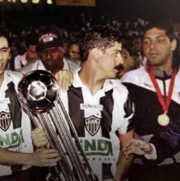
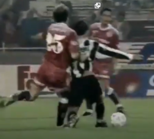
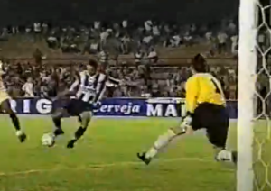
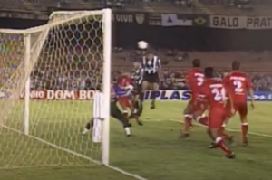
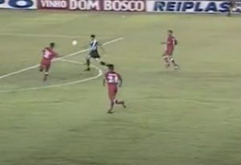
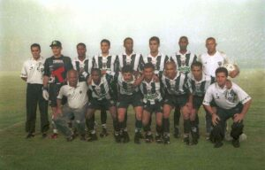
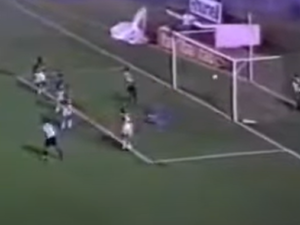
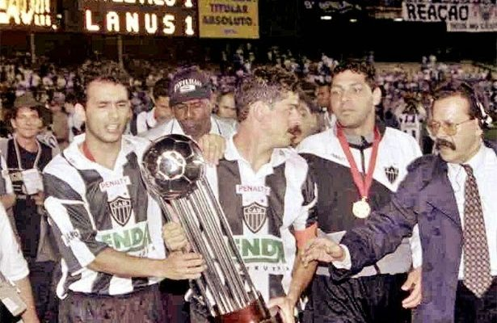
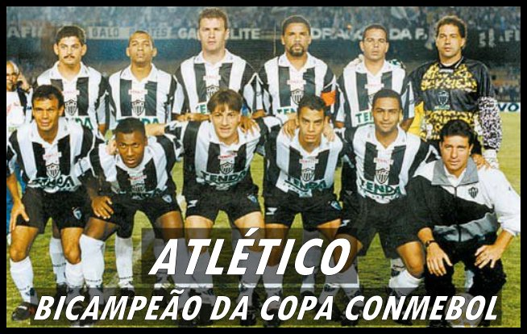
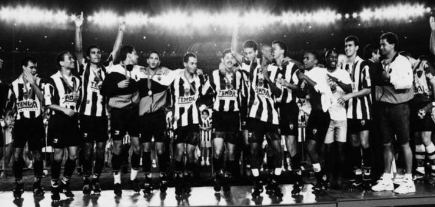

Home
Futebol
Elenco
Títulos
História
Arena MRV
Copa Conmebol 1997
17/12/1997

Atlético 1 x 1 Lanús
(Final - volta) Mineirão - Belo Horizonte - Brasil
06/11/1997

Lanús 1 x 4 Atlético
(Final - ida) Ciudad de Lanús - Buenos Aires - Argentina
29/10/1997

Atlético 4 x 0 Universitário
(Semifinal - volta) Mineirão - Belo Horizonte - Brasil
22/10/1997
Universitário 0 x 2 Atlético
(Semifinal - ida) Nacional - Lima - Peru
16/10/1997

Atlético 1 x 1 América de Cali
(Quartas-de-final - volta) Mineirão - Belo Horizonte -Brasil
24/09/1997

América de Cali 1 x 2 Atlético
(Quartas-de-final - ida) Pascual Guerrero - Cáli - Colômbia
09/09/1997

Atlético 0 x 0 Portuguesa
(Oitavas - volta) Mineirão - Belo Horizonte - Brasil
03/09/1997

Portuguesa 1 x 4 Atlético
(Oitavas - ida) Canindé - São Paulo - Brasil
Copa Conmebol 1997


